A3 Technology • UX/UI y Branding • 2026
App y marca para negocios locales
Una app para encontrar los negocios que tenés cerca, y para que ellos también te encuentren.
01La marca
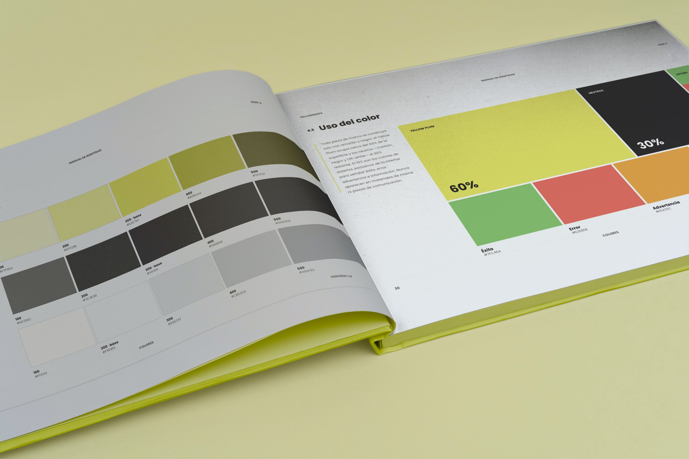
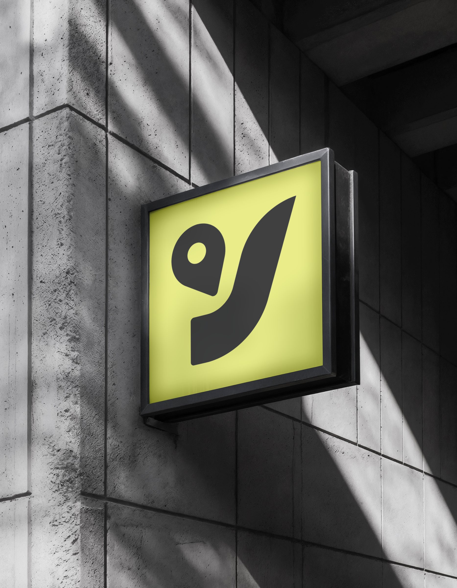
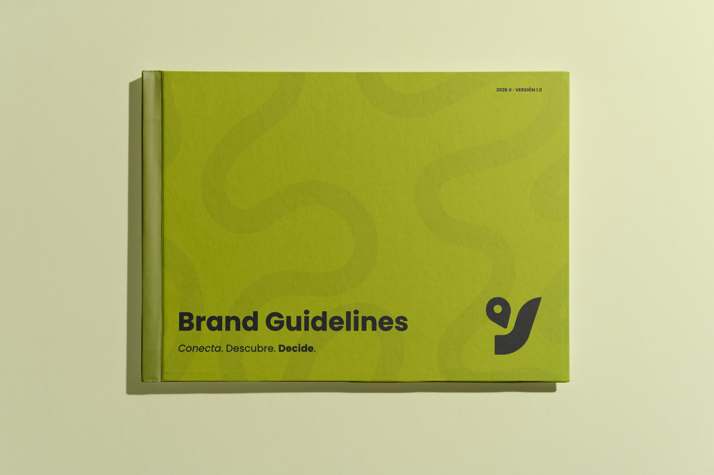
02La app
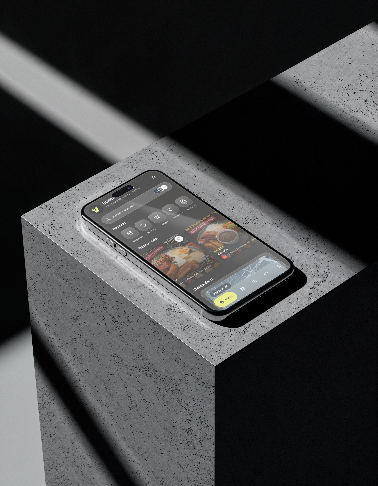
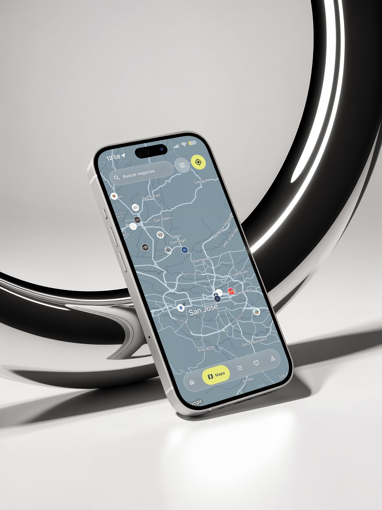
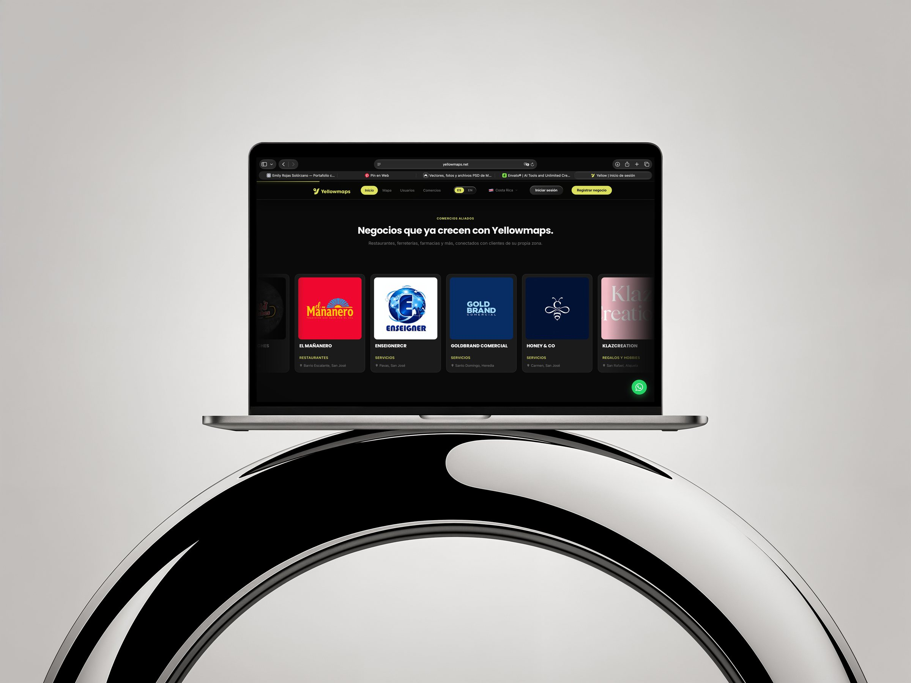
03En la calle
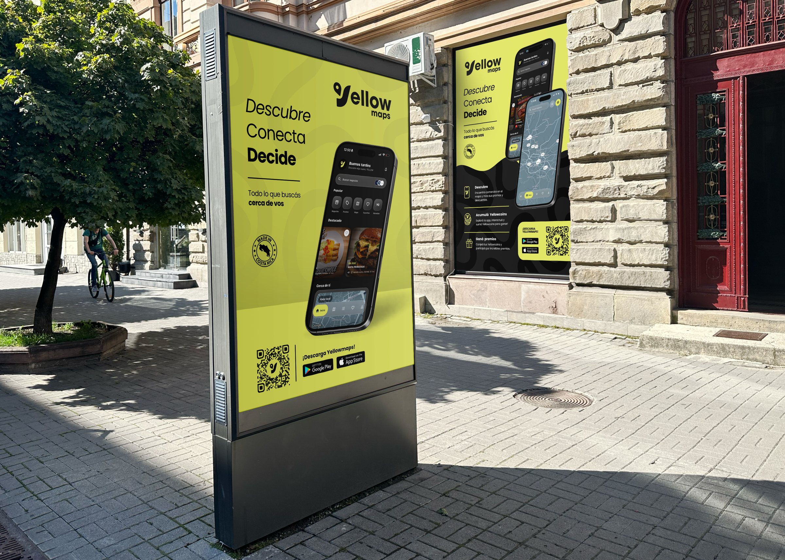
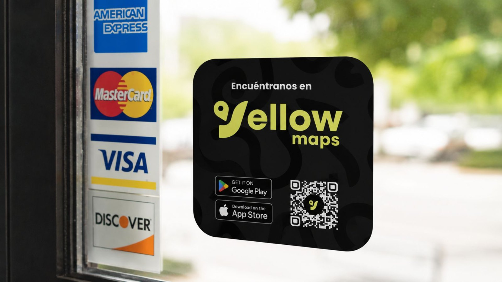
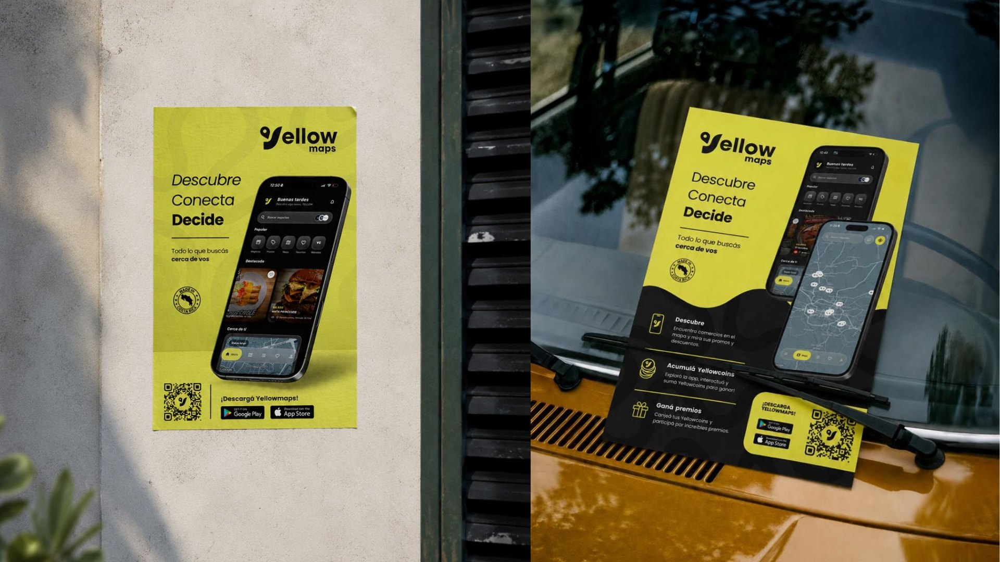
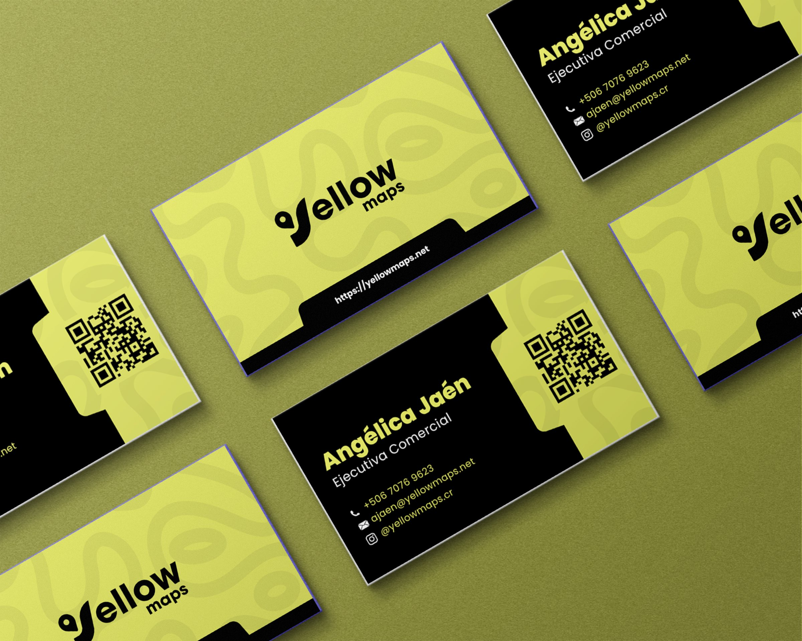
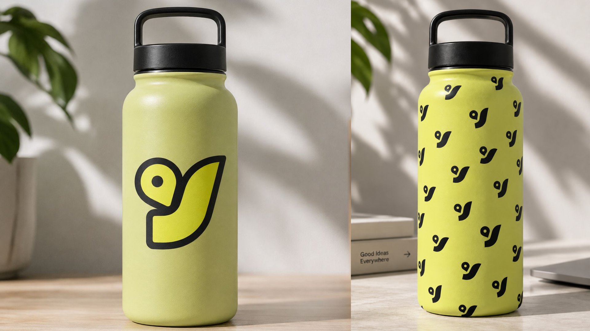
Freelance • Identidad de marca
Identidad para una comunidad
Un grupo de jóvenes que vive la fe en lo de todos los días. Por eso la identidad salió de la naturaleza, no de símbolos religiosos clásicos.
01El logo
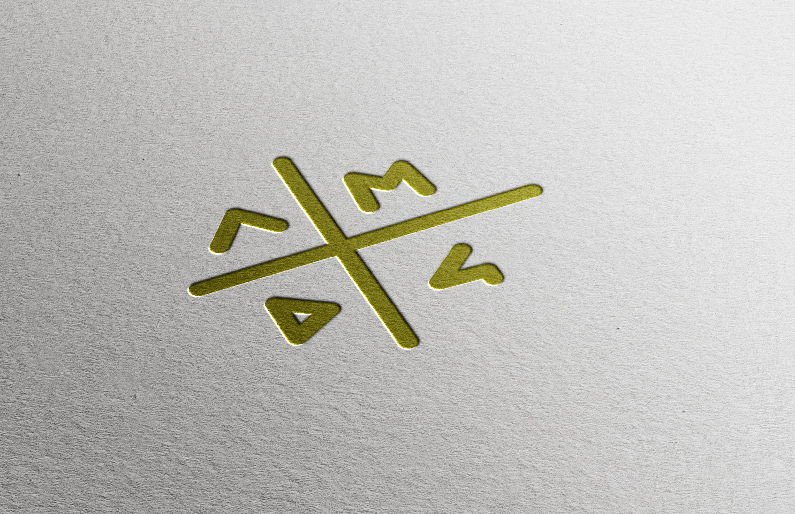
02En uso
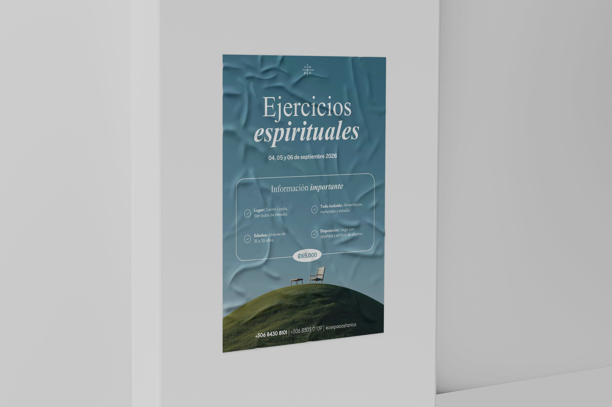